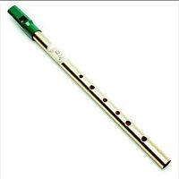
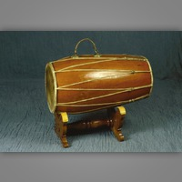
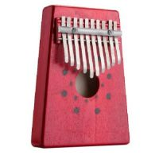

| Instrument | Description |
|---|---|
|  | The Tin Whistle is a simple, six-holed woodwind instrument. It is a type of fipple flute, putting it in the same class as the recorder, Native American flute, and other woodwind instruments that meet such criteria. |
|  | The Kendhang is a two-headed drum used by peoples from Maritime Southeast Asia. Kendang is one of the primary instruments used in the Gamelan ensembles of Java, Bali and Terengganu, the Malay Kendang ensemble as well as various Kulintang ensembles in Indonesia, Malaysia, Brunei, and the Philippines. It is constructed in a variety of ways by different ethnic groups. |
|  | The mbira is an African musical instrument consisting of a wooden board (often fitted with a resonator) with attached staggered metal tines, played by holding the instrument in the hands and plucking the tines with the thumbs. The mbira is usually classified as part of the lamellaphone family, and part of the idiophone family of musical instruments.Mbira came to prominence after the worldwide stage performance and recordings of Thomas Mapfumo on the 1980s, whose music is based on and includes the mbira |